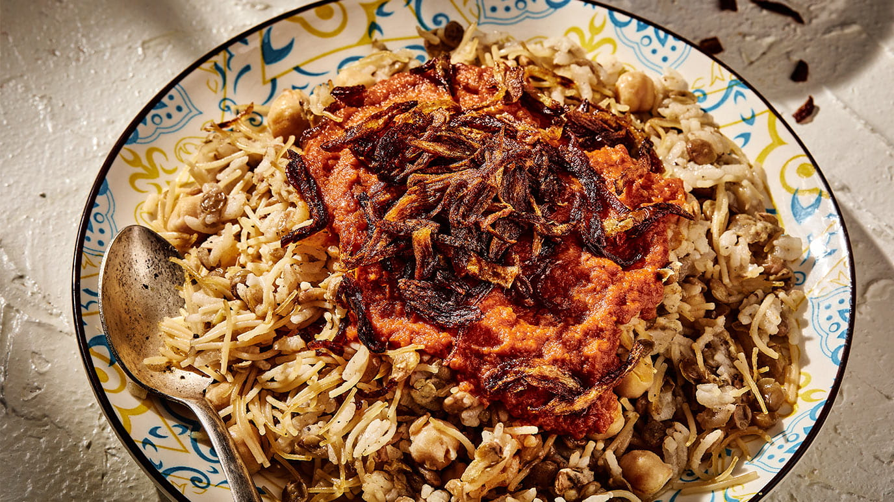

Odin Recipes - Koshary
back to index
Prep Time: 20 mins Cook Time: 1 hrs Total Time: 1 hrs 20 mins
Servings: 8 Yield: 8 Servings
Ingredients
Kabsa Spice Mix:
-
1 (14.5 ounce) can chickpeas (garbanzo beans), drained and rinsed
-
¼ cup red wine vinegar
-
1 teaspoon ground coriander
-
1 teaspoon ground cayenne pepper
-
½ teaspoon ground cumin
-
½ (16 ounce) package ditalini pasta
-
1 ½ cups short-grain rice, rinsed
-
cold water, to cover
-
1 ½ cups dark brown lentils
-
water to cover
-
1 pinch salt and ground black pepper to taste
-
1 tablespoon olive oil
-
1 yellow onion, minced
-
3 cloves garlic, minced
-
1 (14 ounce) can crushed tomatoes
-
1 tablespoon butter
-
3 cups chicken stock
-
1 (3 ounce) can French-fried onions
Directions:
Step 1
Combine the chickpeas, vinegar, coriander, cayenne pepper, and cumin in a resealable bag or container with a tight-fitting lid. Store in refrigerator while prepping remainder of dish, shaking occasionally
Step 2
Bring a pot of lightly salted water to a rolling boil. Cook the ditalani pasta in the boiling water until cooked through yet firm to the bite, about 8 minutes; drain and set aside.
Step 3
Combine the rice with enough cold water to cover; allow to soak for 20 minutes. Drain.
Step 4
Meanwhile, combine the lentils with enough water to cover in a pot; season with salt and pepper. Bring the lentils to a boil and cook at a boil until tender, about 30 minutes. Drain.
Step 5
Heat the olive oil in a saucepan over medium-high heat; cook and stir the onion and garlic in the hot oil until translucent, 5 to 7 minutes. Add the crushed tomatoes, season with salt and pepper, reduce heat to medium-low, and maintain at a simmer while preparing remainder of dish.
Step 6
Melt the butter in a pot over medium-high heat. Add the rice to the butter, increase heat to high, and fry for 4 to 5 minutes, stirring constantly. Pour the chicken stock over the rice; bring to a boil. Season the rice mixture with salt and pepper, reduce heat to low, cover the pot, and cook until rice is tender, and the liquid has been absorbed, about 20 minutes.
Step 7
Mix the rice and lentils together on a large serving platter. Spread the cooked ditalani over the rice and lentil mixture. Serve with the marinated chickpeas, the tomato sauce, and the French-fried onions as condiments.